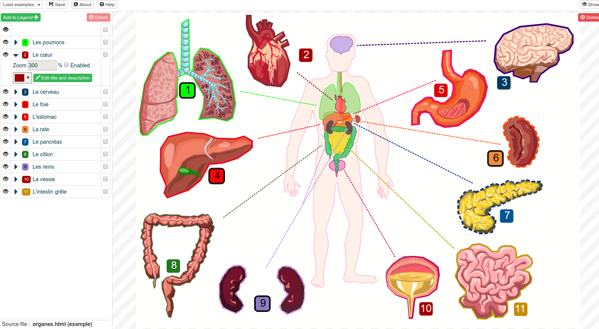

Intro
L'objectif est simple : éditer un fichier SVG statique afin de le présenter comme un contenu interactif. Permettre l'ajout de zones cliquables pouvant être zoomés et enrichies d'une explication.
Les fichiers générés (page HTML contenant le SVG) peuvent servir à divers usages :
- contenus éducatifs
- support de présentation
- etc.

Objectifs techniques
-
Créer des illustrations interactives avec toujours le même gabarit : une légende contenant des indices titrés et un descriptif pour une zone de l'illustration. Des exemple sont disponibles :
-
Permettre des zooms sur les zones décrites
-
Avoir un contenu responsive (vu que le contenu est pleinement vectoriel, pourquoi s'en priver)
-
être et rester simple d'utilisation (KISS et philosophie Unix) et productif pour enrichir une illustration à vocation pédagogique.
-
Rester simple à développer et maintenir : un mode Debug permet justement d'étendre le logiciel afin de mieux le tester.
-
Utilisation hors ligne et intégré dans une distribution Linux via un paquet .deb
Version de démo en ligne
Il est possible d'utiliser directement la dernière version sur : https://mothsart.github.io/labo/frontend/edit_interactive_svg/
Des illustrations effectués intégralement à partir de cet éditeur sont disponbiles via une liste d'exemples.
Explication d'utilisation
-
On glisse et on dépose (ou on choisi via son explorateur de fichiers) son fichier svg statique. (si possible sans animation et javascript) On arrive sur une interface nous permettant d'éditer ce fichier.
-
On ajoute des indices dans la légende. Ces derniers s'affichent également sur notre illustration si l'on clique sur les icones d'affichages (des yeux).
-
On les positionnes au gré de nos envies (en restant appuyé sur le clic gauche) sur l'indice à déplacer.
-
Un menu déroulant sur l'indice est disponible afin de l'éditer : Il est possible de changer la couleur, de zoomer mais également d'ajouter/editer le titre et la description de notre indice.
-
L'accès au mode de visualisation nous permet d'avoir un apperçu du rendu final. (avec les animations sur les indices si le zoom a été paramètré).
-
Il est possible de changer l'odre de nos indices (en les sélectionnant et les glissants) et d'en supprimer ainsi que de les afficher ou non. (pratique si l'on ne veut se concentrer que sur un éventail précis)
-
Le bouton Enregistrer son travail permet de convertir notre illustration interactive en un fichier html. (équivalent au mode de visualisation)
-
Si l'on veut repartir d'une feuille blanche, il suffit de cliquer sur Supprimer.
Utilisation dans une distribution
Il est possible d'installer un ppa afin de profiter de l'éditeur dans Ubuntu :
https://launchpad.net/~jerem-ferry/+archive/ubuntu/app-illustration
Pour ce faire, on ajoute le dépôt à sa liste et on met à jour :
sudo add-apt-repository ppa:jerem-ferry/app-illustration
sudo apt-get updateEnfin, on installe le-dit logiciel :
sudo apt-get install edit-interactive-svgParticiper au logiciel
Les sources du projet sont disponibles sur Github : https://github.com/mothsART/editInteractiveSVG
Il est possible de me rapporter des bugs directement via les issues du dépôt mais également sur le forum de PrimTux : http://forum.primtux.fr/viewtopic.php?pid=8870
Les artistes ne sont pas en reste non plus. Jusqu'à présent, j'ai créé les exemples (conception, réalisation sous Inkscape puis ajout de contenu interactif) mais vous pouvez bien entendu m'avertir de réalisations faites avec cet outil.
Si le contenu est suffisament pertinent et que vous m'y authorisé, il pourra être ajouté dans les exemples.
Sinon, j'aimerais mettre en place une gallerie de réalisations. (une liste de liens dans un premier temps)
Comments
comments powered by Disqus